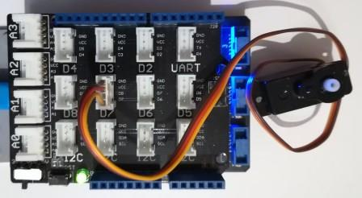

Version: 0.8.0
Grove ServoMotor is connected as followed on Netduino 3:

| Grove Rtc | Mainboard |
|---|---|
| Yellow wire | D7 |
using System.Threading;
using Bauland.Grove;
using Bauland.Pins;
namespace TestServoMotor
{
static class Program
{
static void Main()
{
// Grove ServoMotor is connected on D7 pin of Netduino 3 with base shield
ServoMotor servoMotor = new ServoMotor(Netduino3.PwmPin.Controller5.Id, Netduino3.PwmPin.Controller5.D7);
while (true)
{
servoMotor.SetPosition(0);
Thread.Sleep(1000);
servoMotor.SetPosition(45);
Thread.Sleep(1000);
servoMotor.SetPosition(90);
Thread.Sleep(1000);
servoMotor.SetPosition(135);
Thread.Sleep(1000);
servoMotor.SetPosition(180);
Thread.Sleep(1000);
}
}
}
}